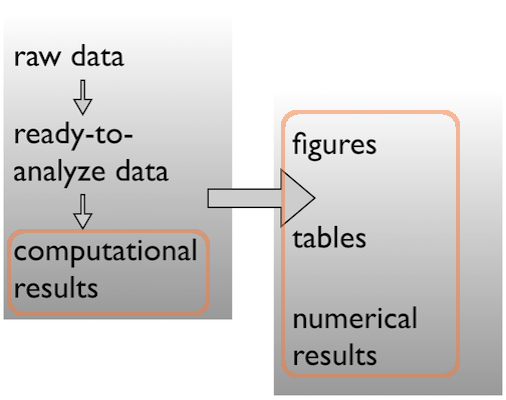
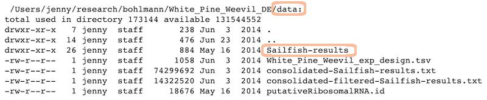
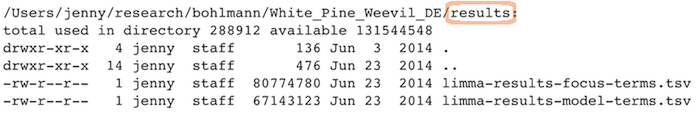

Stat 585 - Organization and Analysis Flow
Heike Hofmann
Source
Material for this slide deck comes from
A place for everything, everything in its place.
Benjamin Franklin
Data analysis workflow

Face it…
- There are going to be files
- LOTS of files
- The files will change over time
- The files will have relationships to each other
- It’ll probably get complicated
Mighty weapon
- File organization and naming is a mighty weapon against chaos
- Make a file’s name and location VERY INFORMATIVE about what it is, why it exists, how it relates to other things
- The more things are self-explanatory, the better
- READMEs are great, but don’t document something if you could just make that thing self-documenting by definition
Organizing your data analysis workflow
Raw data \(\rightarrow\) data
Pick a strategy, any strategy, just pick one!

data
data-raw
data-clean
data/
- raw
- clean
Data \(\rightarrow\) results
Pick a strategy, any strategy, just pick one!
code
scripts
analysis
bin
Data \(\rightarrow\) results
Pick a strategy, any strategy, just pick one!

figures
results
results/
- figs
- nums
figures
tables
A real (and imperfect!) example
/Users/jenny/research/bohlmann/White_Pine_Weevil_DE:
total used in directory 246648 available 131544558
drwxr-xr-x 14 jenny staff 476 Jun 23 2014 .
drwxr-xr-x 4 jenny staff 136 Jun 23 2014 ..
-rw-r--r--@ 1 jenny staff 15364 Apr 23 10:19 .DS_Store
-rw-r--r-- 1 jenny staff 126231190 Jun 23 2014 .RData
-rw-r--r-- 1 jenny staff 19148 Jun 23 2014 .Rhistory
drwxr-xr-x 3 jenny staff 102 May 16 2014 .Rproj.user
drwxr-xr-x 17 jenny staff 578 Apr 29 10:20 .git
-rw-r--r-- 1 jenny staff 50 May 30 2014 .gitignore
-rw-r--r-- 1 jenny staff 1003 Jun 23 2014 README.md
-rw-r--r-- 1 jenny staff 205 Jun 3 2014 White_Pine_Weevil_DE.Rproj
drwxr-xr-x 20 jenny staff 680 Apr 14 15:44 analysis
drwxr-xr-x 7 jenny staff 238 Jun 3 2014 data
drwxr-xr-x 22 jenny staff 748 Jun 23 2014 model-exposition
drwxr-xr-x 4 jenny staff 136 Jun 3 2014 results
Data
Ready to analyze data:

Raw data:

Scripts
Linear progression of R scripts, and Makefile to run the entire analysis:

Results
Tab-delimited files with one row per gene of parameter estimates, test statistics, etc.:

Expository files
Files to help collaborators understand the model we fit: some markdown docs, a Keynote presentation, Keynote slides exported as PNGs for viewability on GitHub:

Caveats / problems with this example
- This project is no where near done, i.e. no manuscript or publication-ready figs
- File naming has inconsistencies due to three different people being involved
- Code and reports/figures all sit together because it’s just much easier that way w/ knitr & rmarkdown
Wins of this example
- I (Jenny Bryan) can walk away from the project and come back to it a year later and resume work fairly quickly
- The two other people (the post-doc whose project it is + the bioinformatician for that lab) were able to figure out what I did and decide which files they needed to look at, etc.
GOOD ENOUGH!
Tip: The from_joe directory
- Let’s say my collaborator and data producer is Joe.
- He will send me data with weird space-containing file names, data in Microsoft Excel workbooks, etc.
- It is futile to fight this, just quarantine all the crazy here. I rename things and/or export to plain text and put those files in my data directory.
- Whether I move, copy, or symlink depends on the situation.
- Whatever I did gets recorded in a README or in comments in my R code – whatever makes it easiest for me to remind myself of a file’s provenance, if it came from the outside world in a state that was not ready for programmatic analysis.
Tip: Give yourself less rope
- I often revoke my own write permission to the raw data file.
- Then I can’t accidentally edit it.
- It also makes it harder to do manual edits in a moment of weakness, when you know you should just add a line to your data cleaning script.
Tip: Prose
- Sometimes you need a place to park key emails, internal documentation and explanations, random Word and PowerPoint docs people send, etc.
- This is kind of like
from_joe, where I don’t force myself to keep same standards with respect to file names and open formats.
Tip: Life cycle of data
Here’s how most data analyses go down in reality:
- You get raw data
- You explore, describe and visualize it
- You diagnose what this data needs to become useful
- You fix, clean, marshal the data into ready-to-analyze form
- You visualize it some more
- You fit a model or whatever and write lots of numerical results to file
- You make prettier tables and many figures based on the data & results accumulated by this point
Both the data file(s) and the code/scripts that acts on them reflect this progression
Prepare data \(\rightarrow\) Do stats \(\rightarrow\) Make tables & figs
The R scripts:
01_marshal-data.r
02_pre-dea-filtering.r
03_dea-with-limma-voom.r
04_explore-dea-results.r
90_limma-model-term-name-fiasco.r
The figures left behind:
02_pre-dea-filtering-preDE-filtering.png
03-dea-with-limma-voom-voom-plot.png
04_explore-dea-results-focus-term-adjusted-p-values1.png
04_explore-dea-results-focus-term-adjusted-p-values2.png
...
90_limma-model-term-name-fiasco-first-voom.png
90_limma-model-term-name-fiasco-second-voom.png
Recap
File organization should reflect inputs vs outputs and the flow of information
/Users/jenny/research/bohlmann/White_Pine_Weevil_DE:
drwxr-xr-x 20 jenny staff 680 Apr 14 15:44 analysis
drwxr-xr-x 7 jenny staff 238 Jun 3 2014 data
drwxr-xr-x 22 jenny staff 748 Jun 23 2014 model-exposition
drwxr-xr-x 4 jenny staff 136 Jun 3 2014 results